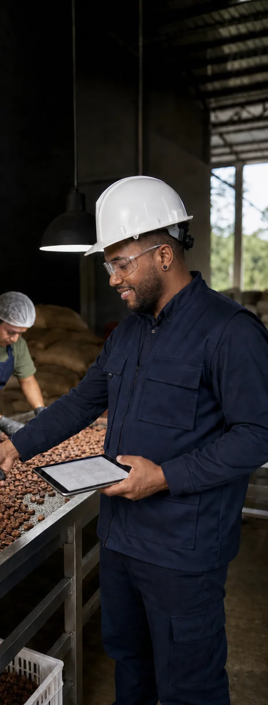
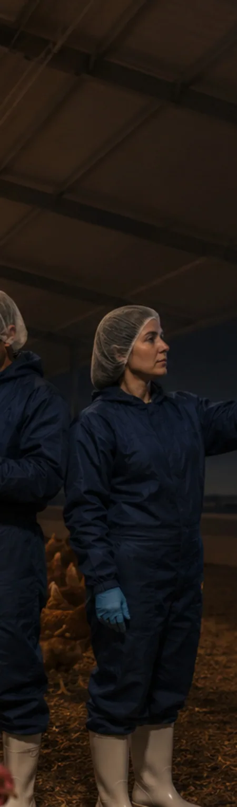

Receptor
Planta, animal, alimento, producto, proceso o persona.
Iluminación agroproductiva y rural
La evaluación relaciona el receptor, el objetivo productivo, el ambiente, el tiempo y las variables lumínicas necesarias. No parte de recetas universales.
Imagen conceptual aprobada · no corresponde a un proyecto real
Estructura de la consulta
Planta, animal, alimento, producto, proceso o persona.
Crecimiento, manejo, inspección, seguridad, operación o calidad.
Espacio abierto, cubierto, invernadero, establo, proceso o almacenamiento.
Fotoperiodo, jornada, estacionalidad y condición de día o noche.
Proceso, organismo y etapa

Inspección, clasificación, transformación y seguridad requieren criterios propios.

El análisis considera especie, ciclo, ambiente, conducta y condiciones de operación.
Imágenes editoriales conceptuales. Representan aplicaciones posibles y no evidencia de proyectos ejecutados por MVH.
Criterio científico
La necesidad puede involucrar espectro, intensidad, distribución, tiempo, respuesta biológica, bienestar, conducta, ambiente y objetivo productivo. MVH valida las capacidades e instrumentos requeridos y define cuándo debe integrar especialistas aliados.
Siguiente paso
Una orientación inicial ayuda a identificar la información necesaria y el servicio pertinente.